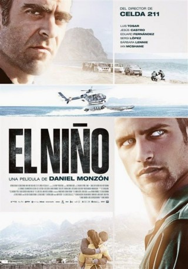

#4655 El Niño - Jagd vor Gibraltar
Alternativ: El Niño
 
 IMDB-Wertung: 6.5 / 10
IMDB-Wertung: 6.5 / 10  Metascore: 0
Metascore: 0 
Niño lebt in einer kleinen spanischen Stadt an der Grenze zu Gibraltar. Dort repariert er Motorboote und träumt gemeinsam mit seinem Freund Compi vom großen Geld. Kurz später scheint die Chance gekommen: Die beiden werden als Kuriere engagiert und transportieren mit einem Speedboot Drogen von Afrika nach Spanien. Der Verdienst ist enorm und zunächst läuft alles prächtig. Doch schon bald wird die Polizei auf die jungen Draufgänger aufmerksam. Jesús und seine Kollegin Eva wollen den Schmugglern schon seit einiger Zeit das Handwerk legen. Und gerade jetzt werden Niño und Compi übermütig. Gemeinsam mit Halil wollen sie ihr eigenes Geschäft aufziehen und gross absahnen. Aber damit sind ihnen nicht nur die Behörden auf den Fersen, sondern auch noch die Drogenmafia ...
Jahr: 2014
Dauer: 130 Minuten
FSK: 12
Land: Spanien Studio: StudioCanalTonspuren:
Untertitel:
Auflösung: 1080p (1920x1040) Größe: 5591 MB
Genre: Drama, Thriller
Regisseur: Daniel Monzón
Drehbuch: Laura Terruso
Soundtrack:
Darsteller:
 Ian McShane als Inglés
Ian McShane als Inglés Luis Tosar als Jesús
Luis Tosar als Jesús Bárbara Lennie als Eva
Bárbara Lennie als Eva Sergi López als Vicente
Sergi López als Vicente- Jesús Castro als Niño
- Jesús Carroza als Compi
 Eduard Fernández als Sergio
Eduard Fernández als Sergio Moussa Maaskri als Rachid
Moussa Maaskri als Rachid Mario de la Rosa als G.A.R. Agente #1
Mario de la Rosa als G.A.R. Agente #1- Mariam Bachir als Amina
 Luka Peros als Murat
Luka Peros als Murat- José Manuel Poga als Mario
- Saed Chatiby als Halil
- Inma Pérez als Carmen
- Chico García als Guardia Civil Gibraltar #1
- Abel Mora als Port Man
- Somaya Taoufiki als Amiga de Amina
- Oti Manzano als Técnico Escáner
- María García als Marifé
- Elías Pelayo als Teniente Guardia Civil
- Juan Motilla als Manolo
- Daniel Morilla als Lab Technician
- Ales Furundarena als Magistrado
- Khaled Kouka als
- Chema del Barco als Mánager Garage
- Juan Carlos Villanueva als Don Manuel
- Monai Saou Ahmed als Magrebí #2
- Rafael Puerto als Guardia Civil Gibraltar #2
- Nizar El Akel als Maghreb Hitman #2
- Bouzekri El Gattaoui als Toothless Man
- Mohamed Hilat als Maghreb Hitman #1
- Abdel Saou Arraiss als Magrebí #1
- Abdelghani Hraira als Maghreb Boy #1
- Antonio Gómiz als G.A.R. Agente #2
- Yassin Felbus als Maghreb Boy #2
- Simón Ferrero als Policía Secreta
- Apll Abbassi als Boat Maghreb Man #1
- Jawad Sakhi als Boat Maghreb Man #2
- Juan Francisco Rodríguez als Pescador
- José Tomás Caballero als Tío de Compi
Datei: X:\2014(A-F)\El Niño - Jagd vor Gibraltar (2014, FSK12, 1920x1040).mkv seit 31.10.2016
Festplatte: HD 2013(I-Z)-2014(A-Z)
 Es gibt insgesamt 119 Filme in der Gruppe '2014(A-F)'
Es gibt insgesamt 119 Filme in der Gruppe '2014(A-F)'